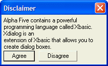

Controlling Word Wrap of Static Text
The {wrap=width} command controls how static text is wrapped on a dialog box.
Width is specified in number of characters. The text word-wraps when the line length is equal to the width of width average sized characters. For example, the command {wrap=80} will cause the line to break when the line length equals the length of 80 average sized characters.
For example, this dialog box causes static text to wrap at an average of 40 characters:
|
ui_dlg_box("Disclaimer",<<%dlg% {wrap=40} Alpha Anywhere contains a powerful programming language called Xbasic. Xdialog is an extension of Xbasic that allows you to create dialog boxes.; <&Agree> <&Disagree> %dlg%) |
The above script creates this dialog:

Lesson 1: Word Wrap
Next
Controlling the Font of Static Text